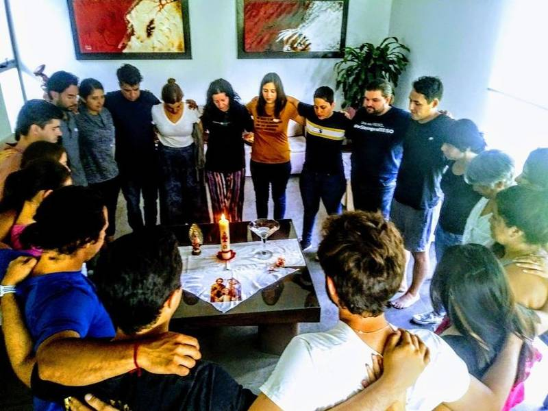
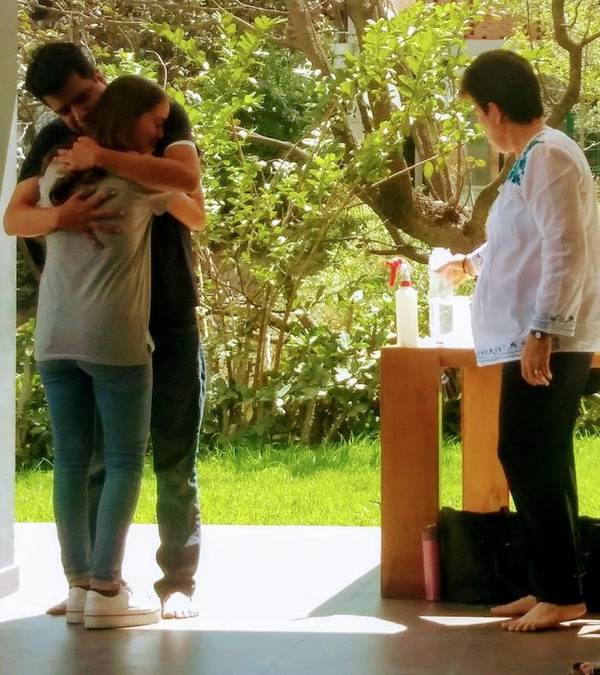
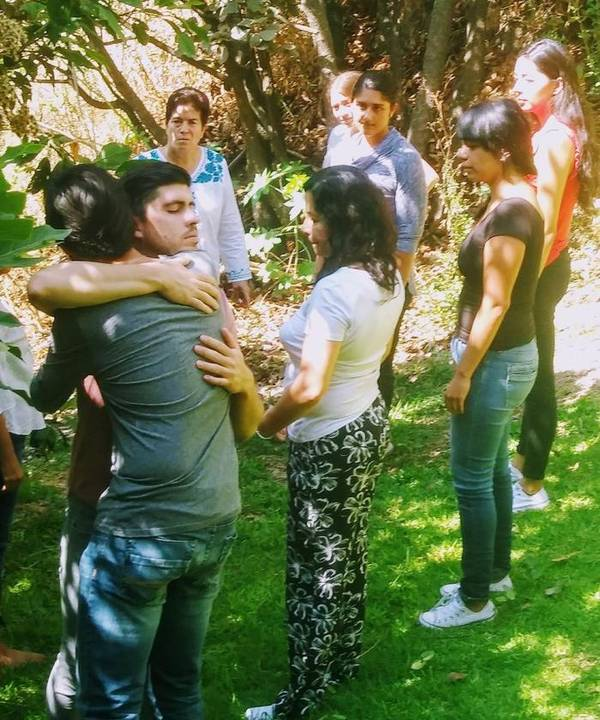
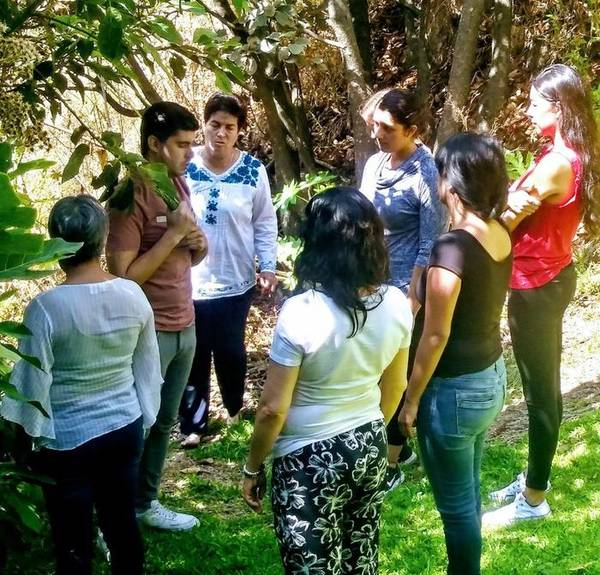
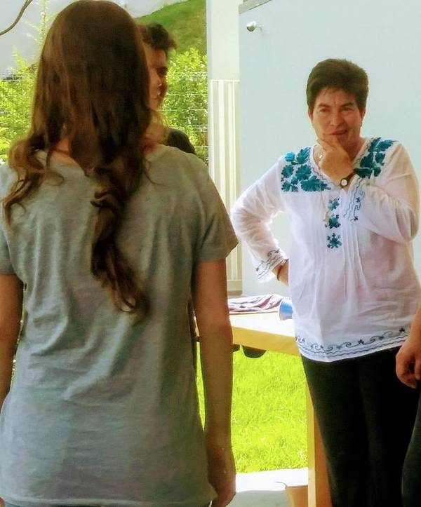

Galería
Momentos que nos inspiran
Talleres, retiros y encuentros donde cada persona encuentra un espacio para sanar y compartir.





Estamos para escucharte
Solicitar acompañamiento
¿Necesitas acompañamiento?
Escríbenos y un miembro de nuestro equipo se pondrá en contacto contigo para orientarte.